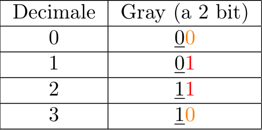

Definizione - Informazione
Secondo la "teoria dell'informazione", un'informazione è una stringa, di lunghezza finita, di simboli appartenenti ad un alfabeto. Tale alfabeto, definisce le informazioni elementari.
Osservazioni personali - Esempi
Esempi di ciò sono:
- l'informazione "testo" composta dall'alfabeto dei "caratteri";
- l'informazione "numero" composta dall'alfabeto delle "cifre";
- l'informazione "immagine" composta dall'alfabeto "valori dei pixel".
Definizione - Codifica binaria dell'informazione
Dato che per i vari motivi elencati in precedenza è comodo lavorare con i segnali binari, risulta utile adottare una codifica binaria (composta da un alfabeto binario) per rappresentare diversi tipi di informazione. Tuttavia, per poter rappresentare più di due informazioni, risulta utile utilizzare delle stringhe di bit.
Definizione - Codice binario
Un codice binario è una funzione che fa corrispondere ad una qualsiasi delle \( 2^{n}\) configurazioni di \( n\) bit (stringhe di \( n\) bit) una delle \( M\) informazioni che si vogliono rappresentare. Affinchè ciò sia sensato, è necessario utilizzare un valore \( n\) tale che \( 2^{n} \geq M\). Seguendo lo stesso ragionamento (ma partendo dal problema inverso), si ha che per rappresentare \( M\) valori, si devono utilizzare almeno \[ n = \lceil \log_{2} M \rceil \] dove \( \lceil \ldots \rceil\) indica l'intero successivo.
Dato che è una funzione, è possibile che ad una configurazione non corrisponda ad alcuna informazione o che due diverse configurazioni corrispondano alla stessa informazione. Non è tuttavia valido che una stessa configurazione corrisponda a più di una informazione.
Dato che è una funzione, è possibile che ad una configurazione non corrisponda ad alcuna informazione o che due diverse configurazioni corrispondano alla stessa informazione. Non è tuttavia valido che una stessa configurazione corrisponda a più di una informazione.
Definizione - Condivisione codice binario tra sorgente e destinatario
Un codice binario è una rappresentazione convenzionale: a parità di \( n\) bit e \( M\) informazioni si hanno \( C\) disposizioni senza ripetizione \[ C = \frac{2^{n} !}{(2^{n} - M) !} \] ovvero un numero che cresce molto rapidamente al crescere di \( n\) e \( M\).
Per questo motivo è necessario, affinchè sia utile, che il codice sia condiviso tra sorgente e destinazione.
Per questo motivo è necessario, affinchè sia utile, che il codice sia condiviso tra sorgente e destinazione.
Definizione - Codici ridondanti e non rinondanti
La teoria combinatoria fornisce un numero minimo di bit da utilizzare, ma non pone alcun limite sul numero massimo (in quanto sarebbero tutti validi).
Quindi, dato un numero minimo di bit per rappresentare \( M\) informazioni, calcolabile come \[ n_{min} = \lceil \log_{2} M \rceil \] un codice si definisce
Quindi, dato un numero minimo di bit per rappresentare \( M\) informazioni, calcolabile come \[ n_{min} = \lceil \log_{2} M \rceil \] un codice si definisce
- "ridondante" un codice che utilizza un numero di bit \( n\) maggiore di \( n_{min}\);
- "non ridondante" un codice che utilizza un numero di bit \( n\) uguale a \( n_{min}\).
Osservazioni personali - Esempi di codici ridondanti
Un esempio di codice ridondante molto utilizzato è il codice a sette segmenti (dal nome del display), dove per rappresentare \( 10\) informazioni (ovvero le cifre da \( 0\) a \( 9\)), utilizza \( 7\) bit (che indicano quale "segmento" accendere al fine di visualizzare tale cifra).
Altro esempio diffusissimo è il codice a barre ("Universal Product Code") che grazie alla sua ridondanza rende possibile la lettura tramite un sensore.
Altro esempio diffusissimo è il codice a barre ("Universal Product Code") che grazie alla sua ridondanza rende possibile la lettura tramite un sensore.
Definizione - Rappresentazione dei numeri senza segno
A differenza della consuetudine umana che rappresenta i numeri tramite un sistema di numerazione posizionale (dove ogni cifra assume un valore differente in base alla sua posizione) in base \( 10\), le macchine digitali utilizzano internamente un sistema posizionale in base \( 2\).
In alcuni casi, risulta però utile utilizzare sistemi in base \( \gt 10\), dove, oltre alle dieci cifre tradizionali, si usano anche dei caratteri (ad esempio nel sistema esadecimale, in base \( 16\), utilizzato per rappresentare in maniera compatta gli indirizzi di memoria).
In alcuni casi, risulta però utile utilizzare sistemi in base \( \gt 10\), dove, oltre alle dieci cifre tradizionali, si usano anche dei caratteri (ad esempio nel sistema esadecimale, in base \( 16\), utilizzato per rappresentare in maniera compatta gli indirizzi di memoria).
Definizione - Valore di un numero in base \( B\)
Considerando un numero rappresentato in sistema posizionale in base \( B\), per ottenere il valore di tale numero risulta utile effettuare l'espansione polinomiale dove ad ogni cifra si assegna un valore in base alla sua posizione (\( B^{pos}\)), ovvero:
per poi andare a sommare ogni singola cifra moltiplicata per il suo peso.
Osservazioni personali - Rappresentazione del valore di un numero
È necessario notare che il valore di un numero è un concetto astratto: esso non corrisponde univocamente alla rappresentazione decimale. Nonostante ciò, proprio perchè per la consuetudine umana di utilizzare il sistema posizionale in base \( 10\), ci risulta gratuita questa rappresentazione.
Esempio - Valore di un numero in base \( 2\)
Si vuole calcolare il valore numero \( 10110,0101)_{2}\): e andando a sommare ogni valore si ottiene \[ 10110,0101)_{2} = 16 + 4 + 2 + 0,25 + 0,0625 = 22,3125 \] che, per come abbiamo ragionato, coincide con la rappresentazione in base \( 10\).

Definizione - Rappresentazione di un numero in base \( B\) (Conversione iterativa)
Considerando un qualsiasi valore (rappresentato convenzionalmente in base \( 10\)), per rappresentarlo in una base \( B\) può essere utile ricorrere all'algoritmo di conversione iterativa. Per farlo si separano la parte intera e la parte frazionaria.
Considerando quindi la parte intera, si effettua la divisione intera per \( B\) (ovvero \( \frac{valore}{B}\)) e si considera anche il resto di tale divisione. Tale resto sarà considerata la cifra nella \( i\)-esima posizione, dove \( i\) inizia da \( 0\) e indica il numero di divisioni. Si considera tale processo terminato quando il valore del quoziente sarà \( 0\) (si potrebbe anche continuare ma ciò porterebbe ad un numero infinito di '\( 0\)' con valore \( 0\), posti alla sinistra del numero).
Per la parte frazionaria si moltiplica invece per \( B\). Il risultato si separa poi in parte intera e in parte frazionaria. Il valore della parte intera sarà la cifra in \( (-j)\)-esima posizione, dove \( j\) inizia da \( 1\) e indica il numero di moltiplicazioni. Si considera tale processo terminato se il risultato frazionario è uguale a \( 0\) (o si è raggiunto il numero di cifre significative richieste).
Considerando quindi la parte intera, si effettua la divisione intera per \( B\) (ovvero \( \frac{valore}{B}\)) e si considera anche il resto di tale divisione. Tale resto sarà considerata la cifra nella \( i\)-esima posizione, dove \( i\) inizia da \( 0\) e indica il numero di divisioni. Si considera tale processo terminato quando il valore del quoziente sarà \( 0\) (si potrebbe anche continuare ma ciò porterebbe ad un numero infinito di '\( 0\)' con valore \( 0\), posti alla sinistra del numero).
Per la parte frazionaria si moltiplica invece per \( B\). Il risultato si separa poi in parte intera e in parte frazionaria. Il valore della parte intera sarà la cifra in \( (-j)\)-esima posizione, dove \( j\) inizia da \( 1\) e indica il numero di moltiplicazioni. Si considera tale processo terminato se il risultato frazionario è uguale a \( 0\) (o si è raggiunto il numero di cifre significative richieste).
Osservazioni personali - Parte frazionaria infinita
È possibile che non si ottenga mai \( 0\) come risultato della parte frazionaria, in quanto è possibile che un numero razionale non ammetta una rappresentazione finita rispetto ad una certa base.
Esempio - Rappresentazione di un numero in base \( 2\)
Si vuole rappresentare il valore del numero \( 41,6875)_{10}\) in base \( 2\).
Separiamo quindi tale numero in due parti: \( 41\) sarà la parte intera e \( 0,6875\) la parte frazionaria.
La stringa che rappresenterà il valore \( 41\) sarà:
Il valore \( 0,6875\) sarà invece rappresentato come da cui si ottiene \( 0,6875)_{10} = 0,1011)_{2}\).
da cui si ottiene \( 0,6875)_{10} = 0,1011)_{2}\).
Unendo i due risultati si ottiene che \[ 41,6875)_{10} = 101001,1011)_{2} \]
Separiamo quindi tale numero in due parti: \( 41\) sarà la parte intera e \( 0,6875\) la parte frazionaria.
La stringa che rappresenterà il valore \( 41\) sarà:
da cui si ottiene \( 41)_{10} = 101001)_{2}\).
Il valore \( 0,6875\) sarà invece rappresentato come
Unendo i due risultati si ottiene che \[ 41,6875)_{10} = 101001,1011)_{2} \]
Definizione - Conversione da una base ad un'altra
Considerando quindi due qualsiasi basi \( B_{1}\) e \( B_{2}\), è possibile passare da una rappresentazione all'altra utilizzando come "base franca" la base \( 10\) (che risulta più comoda in quanto noi esseri umani ragioniamo in base \( 10\)).
Osservazioni personali - Corrispondenze tra base \( 2\) e base \( 16\)
Tra la base \( 2\) e la base \( 16\) esiste una corrispondenza diretta: infatti è sufficiente sostituire singolarmente il valore di ogni cifra esadecimale con il valore dei rispettivi \( 4\) bit binari.
Ad esempio, per trasformare il numero esadecimale \( F3)_{16}\) è sufficiente fare (in quanto \( F)_{16}\) corrisponde a \( 15)_{10}\)). Ciò rende molto più agevole la conversione tra queste due basi.
(in quanto \( F)_{16}\) corrisponde a \( 15)_{10}\)). Ciò rende molto più agevole la conversione tra queste due basi.
Ad esempio, per trasformare il numero esadecimale \( F3)_{16}\) è sufficiente fare
Definizione - Codice BCD
Il codice BCD ("Binary Coded Decimal") è un codice a lunghezza fissa di \( 4\) bit utile per rappresentare le prime \( 10\) cifre decimali quando è necessario interfacciarsi con l'utente. Tale codice, infatti, fa corrispondere le prime \( 10\) cifre a quelle del sistema di numerazione posizionale in base \( 2\) ma, per numeri di più cifre, converte ogni singola cifra in \( 4\) bit. Non è quindi efficiente per quanto riguarda l'occupazione della memoria.
Ad esempio, il numero \( 329\) sarà rappresentato come:
Ad esempio, il numero \( 329\) sarà rappresentato come:
Definizione - Codice di Gray
Il codice di Gray (dal nome del suo creatore) è un codice a lunghezza fissa che ha diverse utilità (tra cui la codifica della posizione nella realtà). Tale codice introduce infatti che ogni numero e il suo successivo differiscano di un solo bit (che nel caso della posizione potrebbe essere influenzata dal disallineamento di una fotocellula, ad esempio).
Definizione - Codici interni ed esterni
È comune che una macchina digitale applichi più volte un processo di trascodifica tra codice interno e codici esterni:
- un codice interno è la codifica utilizzata dall'unità di elaborazione per rappresentare internamente le informazioni. Per questo motivo è solitamente non ridondante per rendere i processi interni più efficienti;
- un codice esterno è la codifica utilizzata dalla macchina per interfacciarsi con l'utente e altre macchine. Per questo motivo è solitamente ridondante (per semplificare la generazione e l'interpretazione) e standard (per rendere possibile la connessione tra macchine).
- codice proprietario, ovvero un codice scelto da un costruttore comune a macchine di sua produzione. Il motivo di utilizzare un codice di questo tipo può essere quello di ottimizzare le prestazioni o proteggere il mercato;
- codice standard, ovvero un codice comune a macchine di diversi costruttori. Tale codice può essere stato scelto da norme internazionali ("de iure") o dal fatto che sia utilizzato ampiamente sul mercato ("de facto").
Osservazioni personali - Codici utilizzati in una calcolatrice
Per evidenziare la convivenza di diversi codici nella stessa macchina digitale, si può considerare come esempio la calcolatrice tascabile. Essa implementa infatti:
- un codice a sette segmenti per visualizzare i dati;
- un codice \( 1\) su \( N\) per i pulsanti (ad ogni pulsanti corrisponde una sola informazione);
- un codice per la rappresentazione interna dei numeri.
Definizione - Rappresentazione dei caratteri (ASCII)
Inizialmente progettato per la comunicazione a distanza di telescriventi, il codice ASCII ("American Standard Code for Information Interchange") è stato il primo standard "de iure" per la codifica binaria dei caratteri. Inizialmente era codificato su \( 7\) bit (poteva quindi rappresentare \( 128\) simboli) ed era composto da:
- 33 caratteri di controllo (i primi 32 posti all'inizio, il 33esimo posto all'ultimo posto (DEL)), molti utilizzati per la retrocompatibilità;
- diversi simboli;
- le cifre decimali (poste dal codice \( 48\) in poi);
- le lettere dell'alfabeto maiuscole (poste dal codice \( 65\) in poi);
- le lettere dell'alfabeto minuscole (poste dal codice \( 97\) in poi, esattamente \( 32\) codici dopo).
Osservazioni personali - Fun fact - DEL
Il carattere DEL deve la sua posizione ai tempi della programmazione su schede forate. Poteva capitare di "forare" una riga (corrispondente ad un'istruzione) incorrettamente e per far capire l'errore all'interprete di tali schede, l'unico modo era forare tutta la riga. Da questo deriva il fatto che il DEL sia rappresentato da tutti \( 1\).
Definizione - Rappresentazione dei caratteri (UNICODE)
Lo standard UNICODE risolse questo problema arrivando a rappresentare ogni carattere con \( 21\) bit. Per rendere più efficiente la memorizzazione e l'elaborazione di questi caratteri (in quanto le architetture sono ottimizzate per operare su gruppi di byte (\( 8\) bit)) sono quindi stati definiti tre standard, detti UTF ("Unicode Transformation Format"):
- l'UTF-32, che per codificare i \( 21\) bit aggiunge semplicemente \( 11\) bit '\( 0\)' a sinistra;
- l'UTF-16, che usa di default \( 2\) byte per codificare i caratteri più comuni, mentre ne usa \( 4\) per i restanti caratteri;
- l'UTF-8, che usa \( 1\) byte per rappresentare i \( 128\) caratteri ASCII e \( 2\), \( 3\) o \( 4\) byte per i restanti.
Definizione - Ottenere dal codice UNICODE la codifica UTF-8
Per ottenere la codifica UTF-8 dal codice UNICODE si applica un particolare algoritmo:
- innanzitutto, dato il codice UNICODE (codificato solitamente in esadecimale), lo si trasforma in binario.
- a questo punto è necessario ottenere il numero di bit significativi del numero: per farlo è sufficiente trovare la posizione del bit a \( 1\) più "significativo";
- in base al risultato si utilizzerà un numero di byte differente:
- se sono meno di \( 7\) (\( \leq 7\)) (ovvero fino al codice \( 127)_{10}\)) si utilizzerà un solo byte;
- se sono compresi tra \( 7\) e \( 10\) (ovvero fino al codice \( 2047)_{10}\)) si utilizzeranno due byte;
- se sono compresi tra \( 11\) e \( 15\) (ovvero fino al codice \( 65535)_{10}\)) si utilizzeranno tre byte;
- se sono più di \( 15\) (\( \geq 16\)) (ovvero dal codice \( 65535)_{10}\) in poi) si utilizzeranno quattro byte;
- una volta ottenuto tale valore, si ha che:
- se si deve utilizzare un solo byte, si completano i bit ottenuti con degli '\( 0\)' fino ad ottenere un byte completo;
- se si hanno più byte si procede con il seguente algoritmo: si prendono i sei bit meno significativi e gli si aggiunge la coppia \( 10\) come bit più significativi dell'ottetto. Si ripete tale procedimento fino a che non terminano i bit disponibili andando ad aggiungere i byte ottenuti in posizioni sempre più significative. A questo punto si completa l'ultimo ottetto ottenuto con una stringa di bit che inizia con tanti '\( 1\)' quanti sono i byte, mentre gli altri si impostano a '\( 0\)'
Esempio - Da codice UNICODE a codifica UTF-8
Consideriamo il carattere '€', il cui codice UNICODE è ' e contando il numero di bit significativi si ha \( 12\), ovvero saranno necessari tre byte.
e contando il numero di bit significativi si ha \( 12\), ovvero saranno necessari tre byte.
Consideriamo quindi la stringa di bit ottenuta e "prendiamo" i sei bit meno significativi (a cui aggiungiamo i due bit fissi) A questo punto, la stringa di bit originale sarà e iterando il procedimento si ottiene (sempre aggiungendo i due bit fissi) e Si può ora notare che rimangono solo due bit significativi e che siamo giunti al terzo byte: aggiungiamo quindi la stringa di bit ' Terminiamo quindi assemblando i tre byte ottenuti, ovvero
000020AC' che equivale al valore 8364. Trasformandolo in binario si ottiene Consideriamo quindi la stringa di bit ottenuta
00000000 00000000 00100000 10101100 10 10 1100 00000000 00000000 00100000 10 10110010 00 0010 00000000 00000000 0010 0000 10101100 1110 00' ai due bit rimanenti, andando ad ottenere 1110 0010 1010 1100 1000 0010 1000 0010